MEMBER
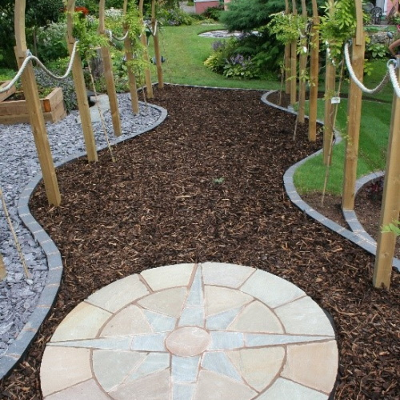
Garden visits, advice and design
We can come to you and help with problem areas, inspiration, pests and diseases or planting plans
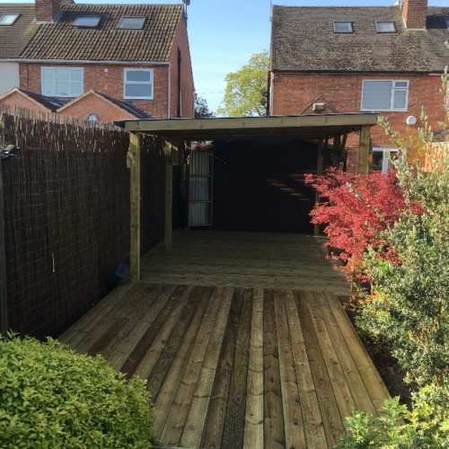
Landscaping
Enhance your existing layout or perhaps a complete change ? We can help you realise your garden’s potential
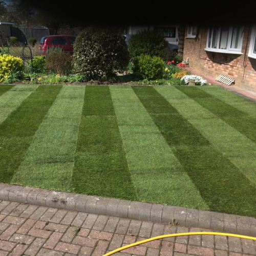
Garden maintenance
From Specialist maintenance to regular grass cutting, we offer an experienced and knowledgeable service to maintain and develop your garden
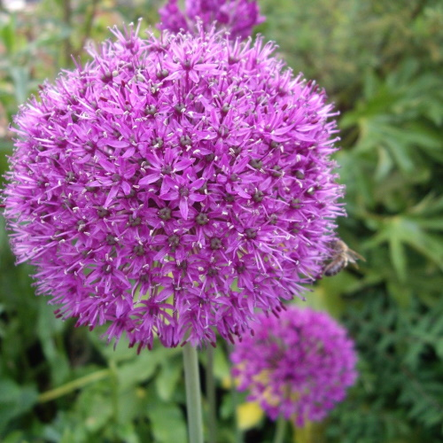
Plant source and supply
We can source and supply any plant, any size, anything from rare and unusual, to reliable perennials, shrubs, and a full range of Grow Your Own
Garden visits and advice
Unsure what to do with your garden or aspects of it, find a particular spot a problem you need help and advice on? Have you difficult soil or a recurring pest and disease problem? We offer a garden visit service to call and discuss any aspect of your garden.
A garden visit will usually last up to one hour and can include a sketch plan (if appropriate) and list of suggestions for a one off charge. No pressure, no commitment to further work just simple professional help regarding anything to do with your garden.
We are specialists in ‘soft landscaping’ - planting schemes and plans, border creation and particularly difficult areas where it is hard to get things to grow.
Our plant knowledge and experience helps us to provide you with a tailor made solution that also meets your expectations of ongoing maintenance and care.
If you need us to, we can source, supply, and even plant new plants for you to ensure the whole service is smooth and hassle free.
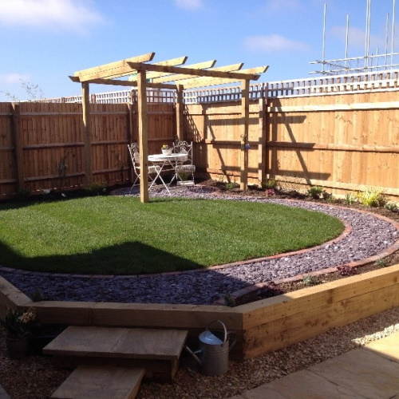
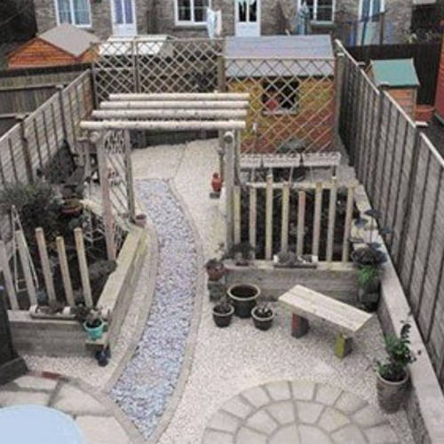
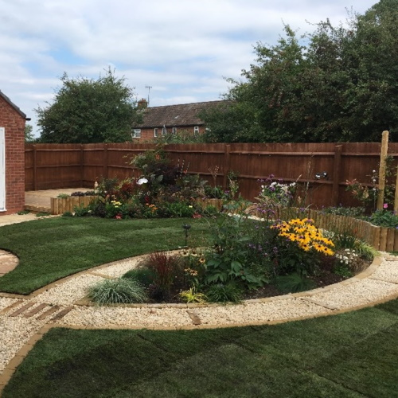
Landscaping
We can enhance your existing layout or produce a complete change for the whole garden. Maybe you have a problem corner that needs inspiration, or more places to sit and relax in your ‘outdoor room’. We can help you realise the full potential of your garden. Some of the services and skills we offer include:
- Low maintenance gardens
- Decking
- Raised beds
- Turfing
- Border Creation
- Plant source, supply and planting
- Screening solutions
- Hedging and natural screening
- Vegetable gardens
- ‘Grow your own’ beds
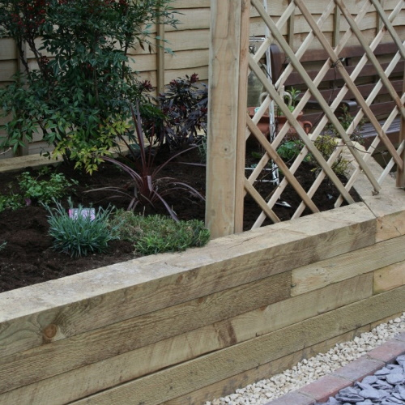
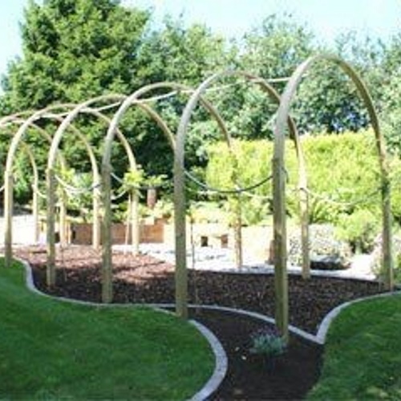
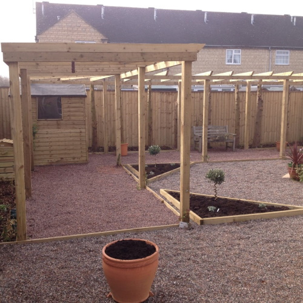
Garden Maintenance
From Specialist maintenance to regular grass cutting, we offer an experienced and knowledgeable service to maintain and develop your garden.
Maintenance can be regular or even holiday cover. Prescriptive maintenance plans can be drawn up to suit any size of garden – no job is too small !
A key holding policy means you do not have to be in attendance when maintenance is carried out. We also maintain second homes and holiday lets to ensure your garden is well looked after in your absence.
We can advise on and supply professional composts, soil conditioners and fertilizers. We hold all relevant chemical and spraying qualifications and licences so pest and weed control can be added to your plan to ensure your garden stays in tip top condition.
Pruning and Trimming - Knowing when to prune trees and shrubs is a difficult art, a mistake can harm even the most resilient plant! We can advise on and deliver expert pruning and trimming to ensure your plants achieve maximum health and potential. We also offer a full hedge cutting service.
Weeding and Clearance -Whether you need weekly weeding of your borders, or just a one off tidy up, we can ensure your garden always looks it’s best. We are licensed to remove green waste from site also.
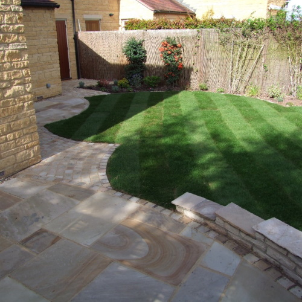
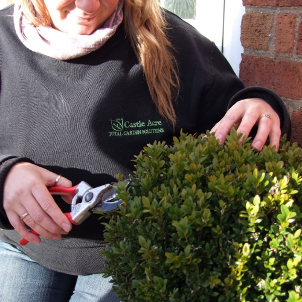
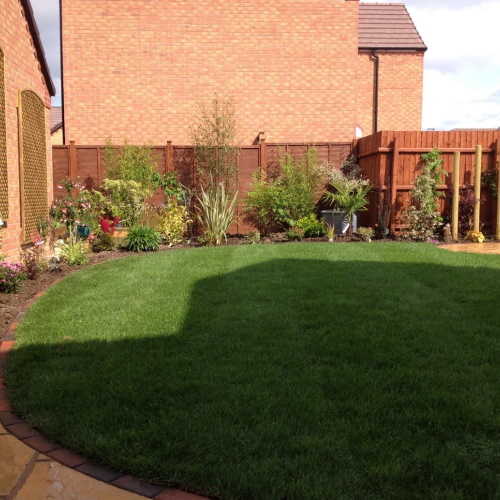
Plant Source and Supply
We are proud to partner with ‘Grow gardening’ , who run a small nursery at Knowle Hill in Evesham, growing a range of plants, and specialising in sustainable gardening and grow your own fruit and vegetables.
They are open by appointment only, so why not let us select and deliver and bring the garden centre to you!
Along with home produced stock, Grow gardening can source and supply any plant, any size, anything from rare and unusual, to large specimens.
Some of the stock we can deliver to you includes :
- Privacy screening plants
- Trees
- Shrubs
- Perennials
- Hedges and Windbreaks
- Grow your own fruit and veg plants
- Compost
- Soil Conditioners
- Fertilisers and Feed
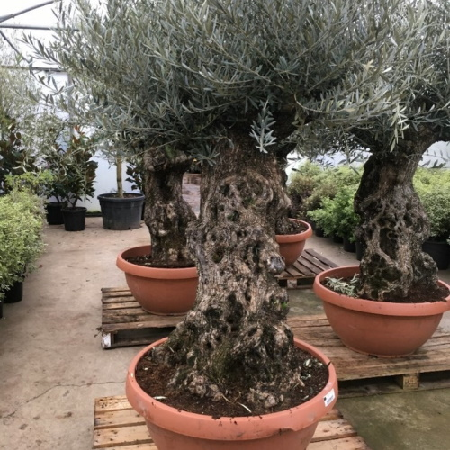
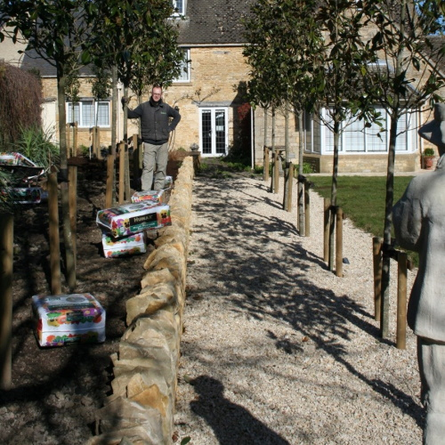